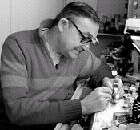

| |
Una campanya popular permet recuperar a Barcelona el rellotge
d'una cèntrica plaça de Sant Andreu
David Marin - El
Punt 11 gener 2006
Un dia de novembre de 2005 el rellotge que marcava el pas del temps
a la petita i tranquil·la plaça del Comerç, al cor de Sant Andreu de
Palomar, va desaparèixer del lloc que havia ocupat durant els últims
78 anys, a la façana de la rellotgeria Carrera. Hi feien reformes a
l'edifici i el rellotge destorbava el nou balcó del primer pis.
La seva falta
no va passar gens desapercebuda. De seguida els veïns i passejants d'aquest
racó del nucli antic de Sant Andreu van començar a fer preguntes, van
parlar amb els amos de l'immoble, van crear una comissió per salvar
el rellotge i van anar a l'ajuntament a esbrinar per què havia donat
permís per desmuntar una peça tan preuada. «Aquest rellotge ha marcat
el pas de les nostres vides, un 90% del 'barri' anomenem el lloc
'la plaça del Rellotge'», explica l'escultor Joan Mora, un dels més
actius defensors del dissortat aparell.
De l'ajuntament van treure el permís per tornar-lo a posar si els propietaris
volien, però amb un disseny diferent, que no sobresortís tant de la
façana, i també el compromís d'una subvenció que han rebutjat sense
dubtar-ho. «És una iniciativa del poble», diu amb orgull Mora.
|

Manel Barbé muntarà el rellotge
allà on el va posar el seu avi.
Foto: D.M.
|
| |
La
maquinària, a punt
Han venut loteria, han posat cartells, han buscat algun patrocinador
i finalment han aconseguit els diners. Ara un fuster està enllestint
la nova caixa i la nova esfera i el rellotger Manel Barbé té ben
greixada i a punt la maquinària del rellotge original, la que va
muntar el seu avi pels volts del 1928, perquè faci rodar les busques
del nou rellotge. |
|